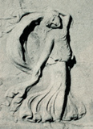
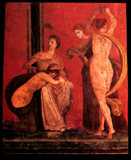
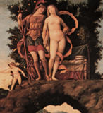
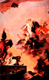

Here the fullness of Europa's shawl tells us that she is not entirely unwilling to be abducted by the white bull.
An ancient Greek and Roman dancing maenad, a frenzied follower of the wine god Dionysus, twirls a scarf shaped like the Greek letter omega behind her back. Here is a dancer on the walls of the House of Mysteries in Pompeii. All throughout subsequent Italian art, the omega shawl motif seems to symbolize that the bearer is in the throes of emotional passion. Here the shape of Venus's scarf signals to Mantegna's audiences that the love goddess is ecstatic about her union with Mars.
|
||
|  Dancing Maenad |
 Pompeiian Dancer |
 Venus |
| ||
|  Tiepolo Fresco Detail | ||
All images on these pages are copyright © 1999 by Holly Smith Pedlosky
To learn more, send e-mail to Holly Smith Pedlosky
|
Would you like to meet some more Venetian housewives? |
Would you like to see some more Laundry? |
Would you like to find out more about laundry, cloth, and draped fabric in Venetian art? |